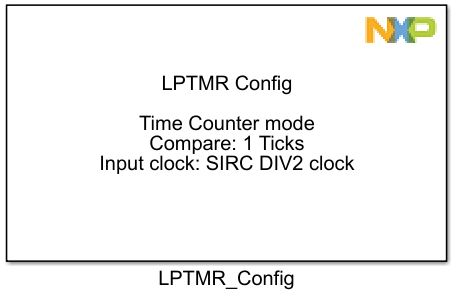
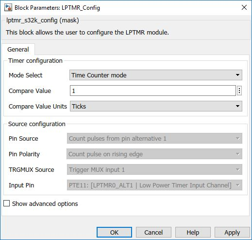
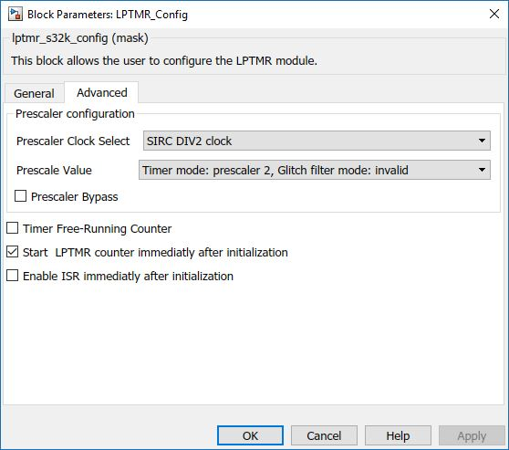

LPTMR Configuration Block
This block allows the user to configure the LPTMR module.
The low-power timer (LPTMR) can be configured to operate as a time counter with optional prescaler, or as a pulse counter with optional glitch filter, across all power modes, including the low-leakage modes. It can also continue operating through most system reset events, allowing it to be used as a time of day counter.
Block Image
Inputs:
- None
Outputs:
- None
Parameters and Dialog Box
The block dialog consists of the following tabs:
General
Mode Select
Configures the running mode of the LPTMR.
- Time Counter Mode
- Pulse Counter Mode
Compare Value
Sets the compare value for the LPTMR. For Ticks the value can be chosen between 1 - 65535.
In Time Counter Mode, the value can be chosen in Ticks or Microseconds while in Pulse Counter Mode the value needs to be chosen only in Ticks units.
Compare Value Units
Selects the compare value units Ticks/Microseconds, only for Time Counter Mode.
- Ticks
- Microseconds
Note: If the desired units are Microseconds, the SDK chooses automatically the prescaler in order to obtain a better precision.
Pin Source (Pulse Counter Mode)
Configures the input source used in pulse counter mode.
- Count pulses from pin alternative 1 - LPTMR_ALT1 pin
- Count pulses from pin alternative 2 - LPTMR_ALT2 pin
- Count pulses from pin alternative 3 - LPTMR_ALT3 pin
- Count pulses from TRGMUX trigger - TRGMUX output
Pin Polarity (Pulse Counter Mode)
Configures the polarity of the input source in Pulse Counter mode.
- Count pulse on rising edge
- Count pulse on falling edge
TRGMUX Source (Pulse Counter Mode)
Configures the input source used for TRGMUX output.
This field is only available if Count pulses from TRGMUX triggeris selected in Pin Select field.
Input Pin
Configures the GPIO pin used as Pulse Counter Source.
Show advanced options
Shows or hides the Advanced options tab.
Advanced
Prescaler Clock Select
Selects the clock to be used by the LPTMR prescaler/glitch filter. In time counter mode, this field selects the input clock to the prescaler. In pulse counter mode, this field selects the input clock to the glitch filter.- SIRC DIV2 clock
- 1kHz LPO clock
- RTC clock
- PCC configured clock
Prescale Value
Selects the clock to be used by the LPTMR prescaler/glitch filter. In time counter mode, this field selects the input clock to the prescaler. In pulse counter mode, this field selects the input clock to the glitch filter.- Timer mode: prescaler 2, Glitch filter mode: invalid
- Timer mode: prescaler 4, Glitch filter mode: 2 clocks
- Timer mode: prescaler 8, Glitch filter mode: 4 clocks
- Timer mode: prescaler 16, Glitch filter mode: 8 clocks
- Timer mode: prescaler 32, Glitch filter mode: 16 clocks
- Timer mode: prescaler 64, Glitch filter mode: 32 clocks
- Timer mode: prescaler 128, Glitch filter mode: 64 clocks
- Timer mode: prescaler 256, Glitch filter mode: 128 clocks
- Timer mode: prescaler 512, Glitch filter mode: 256 clocks
- Timer mode: prescaler 1024, Glitch filter mode: 512 clocks
- Timer mode: prescaler 2048, Glitch filter mode: 1024 clocks
- Timer mode: prescaler 4096, Glitch filter mode: 2048 clocks
- Timer mode: prescaler 8192, Glitch filter mode: 4096 clocks
- Timer mode: prescaler 16384, Glitch filter mode: 8192 clocks
- Timer mode: prescaler 32768, Glitch filter mode: 16384 clocks
- Timer mode: prescaler 65536, Glitch filter mode: 32768 clocks
Prescaler Bypass
When unchecked, the selected prescaler clock in Time Counter mode or selected input source in Pulse Counter mode directly clocks the counter. When checked, the counter is clocked by the output of the prescaler/glitch filter.
Time Free-Running Counter
When unchecked, it configures the counter to reset whenever TCF bit is set. When checked, it configures the counter to reset on overflow.
Start LPTMR counter immediatly after initialization
When unchecked, the counter is not started after initialization done. It can be started using the LPTMR_Start_Stop block. When checked the counter is started immediatly after initialization done.
Default value is checked, even if the advanced configuration is unavailable.
Enable ISR immediatly after initialization
When unchecked, the ISR is not enabled after initialization done. It can be enabled using the LPTMR_ISR_Disen block. When checked the counter is started immediatly after initialization done.
Default value is checked, even if the advanced configuration is unavailable.
Block Dependency
- None
Block Miscellaneous Details
- None